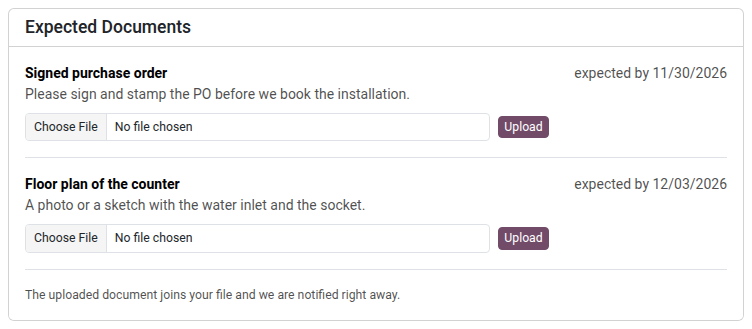
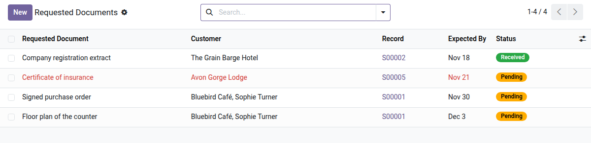

You ask, the customer uploads — from their quotation, their invoice, their task.
The signed purchase order, the insurance certificate, the measurement sheet: these documents arrive by email, get lost in an inbox, and nobody can say which ones are still missing. In Odoo 19, a customer can only send a file from the portal by writing a message in the discussion thread, and only on the pages that display it. Nothing tells them what is expected of them.
On their quotation, the documents you are waiting for, with details and due dates, and a field to upload each one.

Requested, received or overdue in red, with a link back to the quotation. The received file stays attached to its request.

Receiving the document is a start; filing it, getting it signed and finding it again is what comes next. The OdooSkills range offers complete document management, electronic signature with certificate, and bulk download of a record's attachments. Full catalog: apps.odooskills.com.
LGPL-3 license — compatible with Odoo 18.0 Community and Enterprise. Support: apps@odooskills.com.